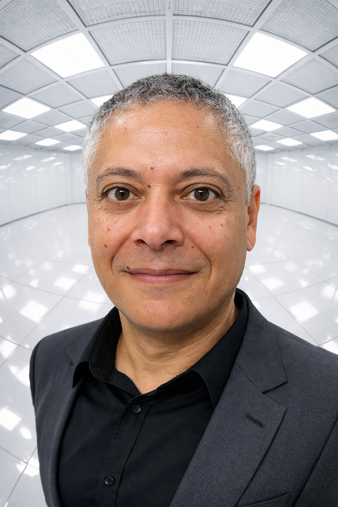

Senior IT-konsult - Transformationsledare med 30+ års erfarenhet inom IT-projektledning, strategisk upphandling och digital transformation. Specialiserad på ERP-implementationer, smidig leverans och ledning av komplexa IT-upphandlingar inom privat och offentlig sektor.

Jag är en erfaren IT-konsult med kompetens inom IT-projektledning, strategisk upphandling och digital transformation. Mitt arbete sträcker sig från att leda AI-stödd processutveckling på statliga myndigheter till komplexa IT-upphandlingar för stora detaljhandelsföretag.
Jag specialiserar mig på att överbrygga gapet mellan verksamhetens behov och tekniska lösningar. Oavsett om jag guidar en kommun genom SaaS-implementation eller leder IT-upphandlingar i miljonklassen fokuserar jag på att förstå kraven och leverera mätbara resultat.
Med en bakgrund inom datavetenskap och certifieringar inom både agila och traditionella metoder anpassar jag mitt tillvägagångssätt till varje projekt och organisation. Jag har lett projekt inom offentlig sektor, detaljhandel, bank och försäkring.
Kronofogdemyndigheten
H&M IT
Uppsala kommun
Landshypotek Bank
Folksam
Skatteverket
H&M IT
Försvarsmakten
Nordea Bank
Swedbank
FMV (Försvarets Materielverk)
Ericsson Telecom
OKQ8 Bank
Salusansvar
Stockholms universitet
Företagsekonomiska studier med fokus på strategisk ledning och organisationsutveckling.
Nacka Gymnasium / Åsö gymnasium
Tekniskt gymnasium med inriktning på datateknik och programmering.
Jag är alltid öppen för att diskutera nya projekt, kreativa idéer eller möjligheter att vara en del av er vision.